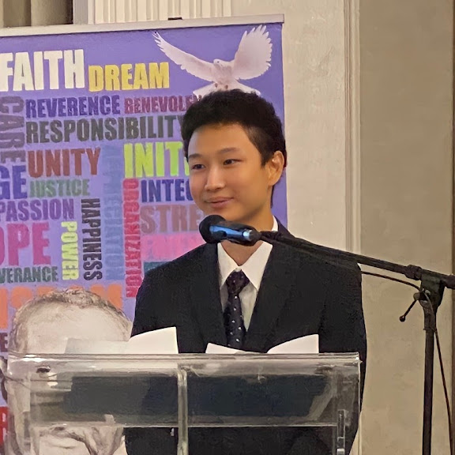

Jeffrey Lu

Summary
I am currently a Computer Science Student at McMaster University with professional work experience in
Machine Learning and Software Development. Previously interned at SequoiaDB Ltd.
Education
- Bachelor of Applied Science, Computer Science - McMaster University (2022 - Expected 2026)
Work Experience
AI Software Developer Intern - SequoiaDB Ltd.
-
Expedited the testing process by 10% for testing team (20+ people) as a member of the Smart Jira project team
-
Researched and compared training methods and implementations of localized Natural Language Processing models Alpaca 13b, Vicuna 13b, Koala 13b
-
Cleaned datasets (i.e. removed irrelevant data and empty cells) to be used for NLP model training
-
Produced demonstration code for HNSW and IVF searching algorithms in Python using NumPy and NMSLIB libraries to show nearest neighbours of a query vector
-
Researched Word2Vec and GloVe pre-trained models for converting words to vectors
-
Constructed Python scripts that convert words to vectors of user specified dimensionality using Gensim library with full unit tests
Projects
Similar Image Search
: July 2023 - Sept 2023
-
Developed and tested a machine learning application in Python that searches for the top 5 visually similar images from an updatable HNSW database to a user's input image via URL
-
Used Towhee library to convert images into vectors, PIL library to render images and NMSLIB library to create and query the K nearest neighbours in an HNSW database
TLDR Roger Ebert Reviews
: July 2023 - Sept 2023
-
Developed and tested an application in Python that generates a 4 line summary of a movie review article from Roger Ebert
-
Used NLTK library for natural language processing (e.g. tokenizing words)
Technical Skills
-
Languages: C, Java, Python, SQL, Bash, HTML, MATLAB, Haskell, Elm
-
Other Skills: Unix, Linux, MacOS, VS Code, Intellij, Git, OOP, Interest in AI/NLP